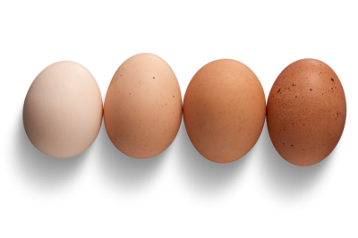

Aliment anti-crise, l'oeuf est le chouchou des Français. Mais comment les choisir pour avoir des oeufs de qualité ?

Appellations ambiguës, emballages trompeurs... la poule aux oeufs d'or du marketing !
Méfiez vous des emballages avec de jolis décors de champs ou de ferme, ou des inscriptions telles que "oeufs de ferme", "oeufs traditionnels", cela ne vous garantit pas l'image de qualité que vous vous en faites.
De nombreux fournisseurs d'oeufs utilisent ces moyens pour tromper le consommateur.
L'habit ne fait pas le moine !
Heureusement, la loi est bien faite ! Les producteurs ont l'obligation de tamponner chacun de leurs oeufs d'un chiffre qui correspond à la méthode de production, suivi du pays de production et du numéro d'exploitation agricole.
C'est le moyen le plus simple et surtout le plus fiable de savoir quel type d'oeuf vous achetez et d'où il vient.
A quoi correspondent les indications sur les oeufs ?
Tous les oeufs se ressemblent et pourtant les modes d'élevage des poules sont très différents. Les conditions d'élevage sont représentées par le 1er chiffre qui figure sur l'oeuf. Il est entre 0 et 3.
Plus le chiffre est petit, plus les poules ont de meilleures conditions de vie et d'élevage, rapprochant des méthodes traditionnelles. Plus le code tend vers le 3, plus on retrouve des conditions d'élevage intensif.
Voilà, vous avez donc toutes les cartes en main, pour choisir vos oeufs de façon éclairée.
Et encore une fois, soyez vigilants quant aux apparences. Sur les marchés, je vois souvent des oeufs posés dans des paniers remplis de paille. Ne vous laissez pas influencer par cette mise en scène champêtre, car les oeufs peuvent aussi bien provenir d'un élevage bio code 0 qu'un élevage intensif en cage code 3. Il suffit de regarder le code sur les oeufs pour en avoir le coeur net.
Faut-il jeter un oeuf périmé ?
Pas forcément ! Les oeufs ont généralement une durée de conservation bien plus longue que celle annoncée sur l'emballage.
Le moyen infaillible pour savoir si votre oeuf est encore bon à consommer, est de le plonger dans un verre d'eau.
S'il flotte, il n'est plus bon. S'il tombe au fond du verre, il est consommable !
Personnellement, j'ai déjà consommé sans problème des oeufs annoncés périmés depuis plus de 15 jours et qui étaient encore frais.
Voilà une astuce anti-gaspi !
Article du 21/02/2024